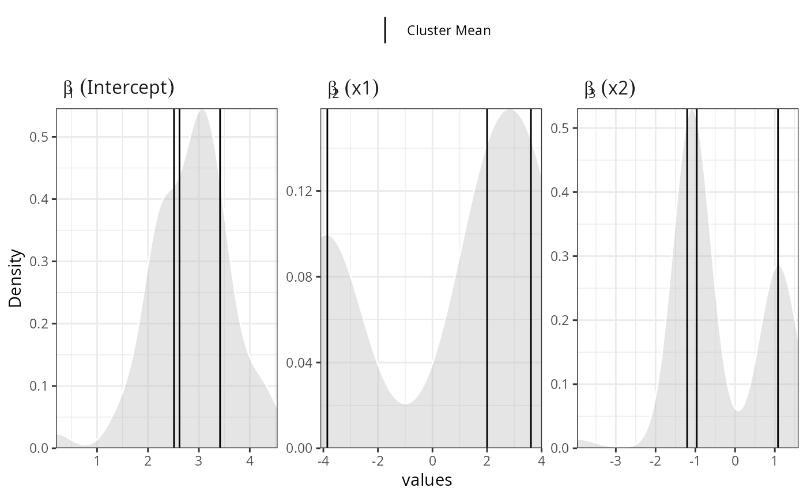
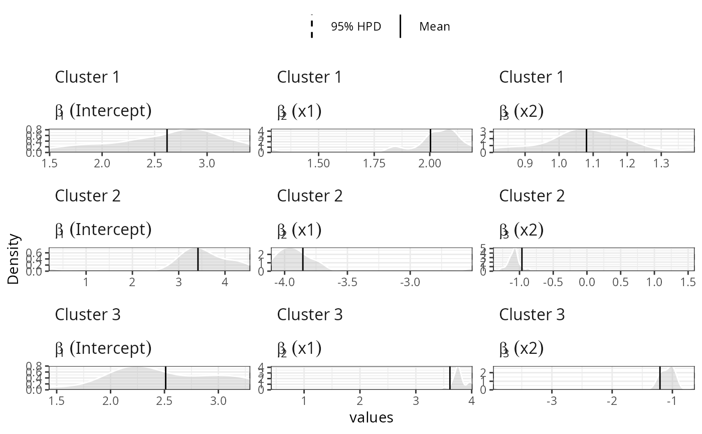

The function estimates a semi-parametric mixture of Generalized Linear Models. It uses a (hierarchical) Dependent Dirichlet Process Prior for the mixture probabilities.
hdpGLM(formula1, formula2 = NULL, data, context.id = NULL, weights = NULL, mcmc, K = 100, fix = NULL, family = "gaussian", epsilon = 0.01, leapFrog = 40, n.display = 1000, hmc_iter = 1, imp.bin = "R", na.action = "exclude")
| formula1 | a single symbolic description of the linear model of the
mixture GLM components to be fitted. The syntax is the same
as used in the |
|---|---|
| formula2 | eihter NULL (default) or a single symbolic description of the
linear model of the hierarchical component of the model.
It specifies how the average parameter of the base measure
of the Dirichlet Process Prior varies linearly as a function
of group level covariates. If |
| data | a data.frame with all the variables specified in |
| context.id | string with the name of the column in the data that uniquely identifies the contexts. If |
| weights | numeric vector with the same size as the number of rows of the data. It must contain the weights of the observations in the data set. NOTE: FEATURE NOT IMPLEMENTED YET |
| mcmc | a list containing elements named |
| K | an integer indicating the maximum number of clusters to truncate the Dirichlet Process Prior in order to use the blocked Gibbs sampler. |
| fix | either NULL or a list with the constants of the model. If not NULL,
it must contain a vector named |
| family | a character with either 'gaussian', 'binomial', or 'multinomial'. It indicates the family of the GLM components of the mixture model. |
| epsilon | numeric, used when |
| leapFrog | an integer, used when |
| n.display | an integer indicating the number of iterations to wait before printing information about the estimation process. If zero, it does not display any information. Note: displaying informaiton at every iteration (n.display=1) may increase the time to estimate the model slightly. |
| hmc_iter | an integer, used when |
| imp.bin | string, either "R" or "Cpp" indicating the language of the implementation of the binomial model. |
| na.action | string with action to be taken for the |
The function returns a list with elements samples, pik, max_active,
n.iter, burn.in, and time.elapsed. The samples element
contains a MCMC object (from coda package) with the samples from the posterior
distribution. The pik is a n x K matrix with the estimated
probabilities that the observation $i$ belongs to the cluster $k$
This function estimates a Hierarchical Dirichlet Process generalized
linear model, which is a semi-parametric Bayesian approach to regression
estimation with clustering. The estimation is conducted using Blocked Gibbs Sampler if the output
variable is gaussian distributed. It uses Metropolis-Hastings inside Gibbs if
the output variable is binomial or multinomial distributed.
This is specified using the parameter family. See:
Ferrari, D. (2020). Modeling Context-Dependent Latent Effect Heterogeneity, Political Analysis, 28(1), 20–46.
Ishwaran, H., & James, L. F., Gibbs sampling methods for stick-breaking priors, Journal of the American Statistical Association, 96(453), 161–173 (2001).
Neal, R. M., Markov chain sampling methods for dirichlet process mixture models, Journal of computational and graphical statistics, 9(2), 249–265 (2000).
## Note: this example is for illustration. You can run the example ## manually with increased number of iterations to see the actual ## results, as well as the data size (n) set.seed(10) n = 300 data = tibble::tibble(x1 = rnorm(n, -3), x2 = rnorm(n, 3), z = sample(1:3, n, replace=TRUE), y =I(z==1) * (3 + 4*x1 - x2 + rnorm(n)) + I(z==2) * (3 + 2*x1 + x2 + rnorm(n)) + I(z==3) * (3 - 4*x1 - x2 + rnorm(n)) ) mcmc = list(burn.in = 0, n.iter = 20) samples = hdpGLM(y~ x1 + x2, data=data, mcmc=mcmc, family='gaussian', n.display=30, K=50)#> #> #> Preparing for estimation ... #> #> #> #> Estimation in progress ... #> #> [======== ] 10 % [=========== ] 15 % [=============== ] 20 % [================== ] 25 % [====================== ] 30 % [========================= ] 35 % [============================= ] 40 % [================================ ] 45 % [==================================== ] 50 % [======================================= ] 55 % [=========================================== ] 60 % [============================================== ] 65 % [================================================== ] 70 % [===================================================== ] 75 % [========================================================= ] 80 % [============================================================ ] 85 % [================================================================ ] 90 % [=================================================================== ] 95 % [=======================================================================] 100 % [=======================================================================] 100 %summary(samples)#> # A tibble: 12 x 8 #> k Parameter term Mean Median SD HPD.lower HPD.upper #> <dbl> <chr> <chr> <dbl> <dbl> <dbl> <dbl> <dbl> #> 1 1 beta1 (Intercept) 2.62 2.79 0.522 1.49 3.41 #> 2 1 beta2 x1 2.00 2.05 0.192 1.29 2.19 #> 3 1 beta3 x2 1.08 1.07 0.133 0.806 1.40 #> 4 1 sigma sigma 0.966 0.946 0.118 0.819 1.20 #> 5 2 beta1 (Intercept) 3.42 3.49 0.885 0.193 4.55 #> 6 2 beta2 x1 -3.85 -3.92 0.337 -4.11 -2.50 #> 7 2 beta3 x2 -0.964 -1.07 0.613 -1.39 1.60 #> 8 2 sigma sigma 1.08 1.03 0.215 0.835 1.85 #> 9 3 beta1 (Intercept) 2.51 2.36 0.504 1.43 3.30 #> 10 3 beta2 x1 3.61 3.75 0.764 0.407 4.01 #> 11 3 beta3 x2 -1.21 -1.06 0.667 -3.98 -0.630 #> 12 3 sigma sigma 1.09 1.04 0.166 0.878 1.53plot(samples)#> #> #> Generating plot... #>#> #> #> Generating plot... #>## compare with GLM ## lm(y~ x1 + x2, data=data, family='gaussian')